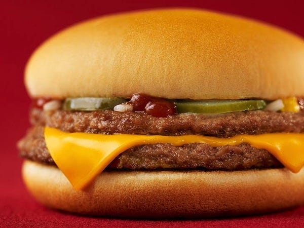

1. Where do we start first?
We suggest that you first observe how much you are spending a day, and where that money is going. For example, if you check with your banking to see that you have spent money at fast food restraunts, try to find ways to cut unneccesary spending.
2. Why should we open a savings account when we already have a debit account?
If your goal is to save money, would you also like to make money? Savings accounts earn interest on your stored money. While the interest rates may be small, every bit added to your total helps! Savings accounts are also great to keep in your head that the account is off limits. One tip that can further your money saving even further is if your employer uses direct deposit, split the deposit into your debt account and your savings. Usually 3/4 of your check to savings while 1/4th goes to debt for allocated spending money!
3. What should we do other than just 'not spending'?There are tons of things you should be doing to save money! Put spare change away, make sure you open a bank account, allocate yourself the proper amount of daily spending, cook from home, try to avoid name brand goods, and finally invest! While investing can be optional for those trying to save money, investing into safe markets like a CD-Account or savings account are much better than the stock market! These investments can stand the test of time and return more money than you invested into them!